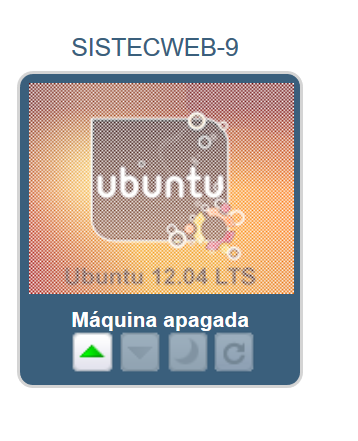
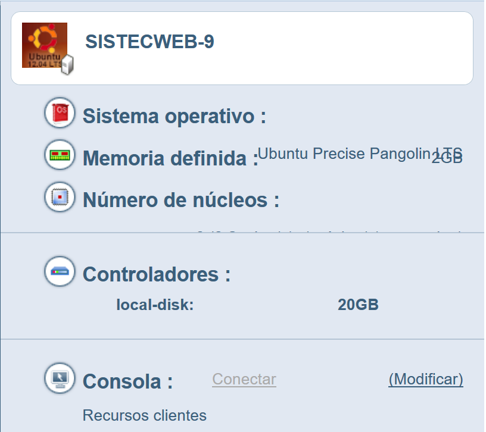
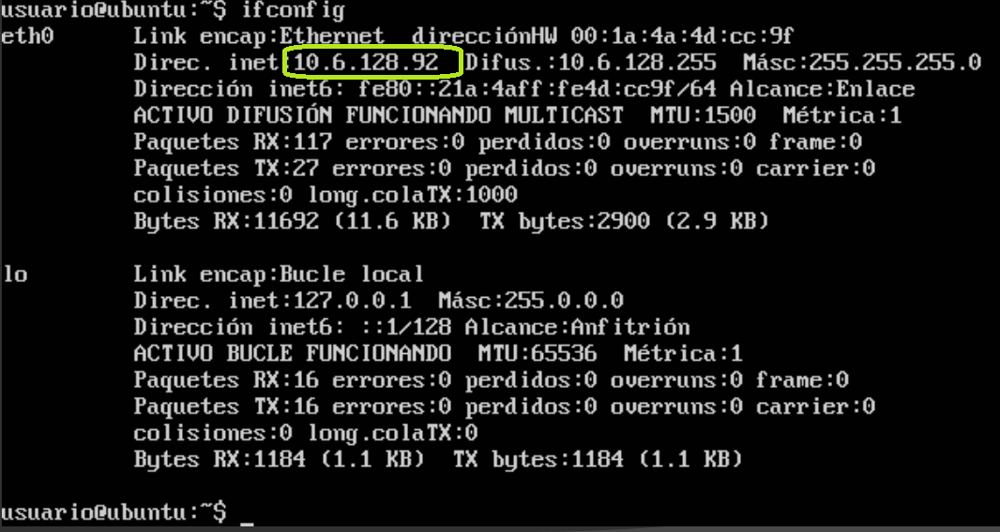
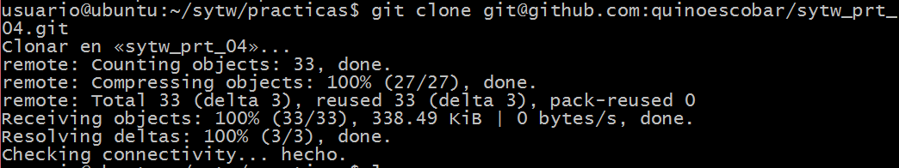
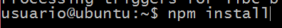
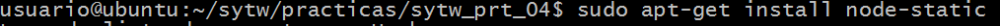

Este repositorio contiene la tercera práctica de la asignatura Sistemas y Tencologías Web desplegada en IAAAS.
La práctica consiste en desplegar el conversor de temperaturas de grados Celsius a grados Farenheit, utilizando IAAAS de la Universidad de la Laguna.
Se accedió a la página Enlace página práctica iaaas.ull.es y se inició sessión con la cuenta universitaria Alu0100XXYYZZ con su correspondiente contraseña.
Se comprobó que existiera la máquina virtual:  Figura 1.
En la Figura 2, se pueden observar las especificaciones de la máquina virtual asignada:  Figura 2.
Se procedió a Encender la máquina virtual y ejecutar la consola, como se puede ver en la Figura 3.  Figura 3.
Figura 3.
Se ejecutó el comando:
$ ifconfigSe obtuvo la dirección IP , ver Figura 4.  Figura 4.
Con la dirección IP identificada, se procedió a añadir en la máquina local un alias para las conexiones, ver Figura 5 :
$ ~.ssh/config Figura 5.
Figura 5.
Se comprobó la conexión desde la terminal local:  Figura 6.
Figura 6.
Se realizó una actualización de la máquina virtual: Figura 7. ## 4. Clonación Se clonó el repositorio de la práctica 3 :  Figura 8. ## 5. Instalación Se instaló en la máquina virtual Node Package Manager: Figura 9.
Al finalizar la instalación de npm, se procedió a instalar todos los paquetes necesarios para el funcionamiento de nuestra aplicación:  Figura 10.
Se instaló node-static, ya que es necesario para el funcionamiento del servidor y no se encontraba en las dependencias de la aplicación:  Figura 11. ## 6. Arrancando servidor
Al finalizar la instalación de las dependencias de la aplicación, se procedió al levantamiento del servidor con el comando:
$ nodejs static-server.jsPara accedió a la página de la aplicación de la siguiente manera:
direccionIP:puerto/ruta
e.g.:http://10.6.128.92:8080/index.htmlEnlace página práctica Cálculadora temperatura
Enlace página Desplegada Cálculadora temperatura
Enlace test de la práctica Cálculadora temperatura
Enlace página author Quinoescobar